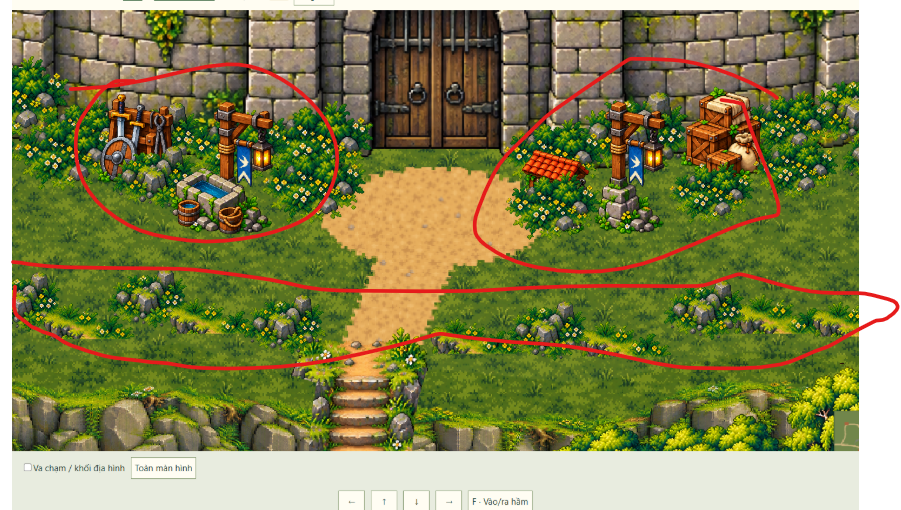

r023: Hốc Rễ lớn hơn và cảnh quan đi kèm.
Thảm tự nhiên trước cổng · r022
Gỡ các đạo cụ không có trong bản thiết kế và thay dải hoa–đá lặp đều.
Bản thiết kế làm chuẩn

Những chi tiết bạn chỉ ra

Cận cảnh trong game · r022

Toàn khu sau khi thay

Thay đổi
- Gỡ cờ/đèn, giá vũ khí, thùng hàng, bảng mái đỏ và máng nước trước cổng.
- Gỡ hàng hoa–đá lặp đều trên mép gò.
- Vẽ bộ cây thấp, dương xỉ, đá rêu, cỏ/rễ và hoa dại thưa; ghép31 khối thành các mảng không đều.
- Giữ lối vào và collision địa hình. Không sửa Trại Bình Minh hoặc thủ thành.
Atlas mới · Prompt và nguồn · Đối tượng gỡ/thay · Hồ sơ286Đợt này xử lý đạo cụ thừa và thảm thực vật. Chưa xác nhận mọi hình đá và khối gò đã trùng tranh mẫu.